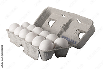
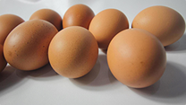
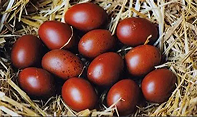
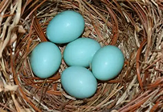
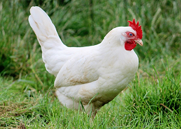
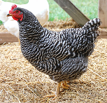
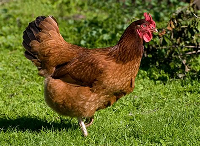
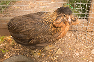

Nos dedicamos a la venta de gallinas de diferentes razas y huevos de
colores diferentes, producidas por gallinas ponedoras
A que nuestra comunidad sea una oportunidad para los campesinos(los que
viven en el campo)
Para que una avícola funcione correctamente se necesita: Instalaciones
limpias y ventiladas. Agua potable constante. Alimentación adecuada.
Control de temperatura. Supervisión veterinaria.
Huevos en venta
huevos blancos

Los huevos blancos de gallina son simplemente huevos puestos por
gallinas con plumaje y lóbulos de las orejas generalmente blancos. La
diferencia con los huevos cafés no es nutricional, sino genética.
huevos marrones

Los huevos cafés de gallina son huevos puestos por gallinas que tienen
genética para producir pigmentos marrones en la cáscara. Provienen de la
gallina doméstica Gallus gallus domesticus, al igual que los huevos
blancos; la diferencia está en la raza y el color del pigmento.
huevos marans

Los huevos cafés Marans son huevos producidos por la gallina de la raza
Marans, una variedad originaria de Francia famosa por poner huevos de
cáscara oscura, a menudo de un color marrón muy intenso tipo
“chocolate”.
huevos azules

Los huevos azules de gallina son huevos que tienen la cáscara
naturalmente azul o azul verdosa. Este color no es artificial ni se debe
a la alimentación, sino a la genética de ciertas razas de gallinas.
Provienen de la gallina doméstica Gallus gallus domesticus,
especialmente de razas específicas como la gallina Araucana.
Gallinas en venta
gallina leghorn

La Leghorn es una raza de gallina ponedora originaria de Italia,
especialmente de la región de Livorno (Leghorn en inglés). Es una de las
razas más populares en la industria avícola mundial por su alta
productividad de huevos blancos, su rusticidad y su adaptabilidad a
diferentes sistemas de cría.
gallina plymouth Rock

La Plymouth Rock es una raza de gallina doméstica estadounidense de tipo
dual propósito, criada tanto para carne como para huevos. Desarrollada
en el siglo XIX, es reconocida por su rusticidad, temperamento dócil y
su característico plumaje barrado blanco y negro. Ha sido una de las
razas más influyentes en la avicultura norteamericana.
gallina Rhode island red

El Rhode Island Red es una raza de gallina estadounidense desarrollada
en el siglo XIX en el estado de Rhode Island. Es conocida por su alta
productividad de huevos y su adaptabilidad, lo que la ha convertido en
una de las razas más populares en la avicultura mundial.
gallina aracuana

La gallina Araucana es una raza de ave doméstica originaria del sur de
Chile, criada tradicionalmente por el pueblo mapuche. Es conocida
mundialmente por poner huevos de color azul verdoso, un rasgo genético
único que la distingue de otras razas de corral.
visitanos y compra todos estos productos y animales con los buenas
gallinas de buena calidad que nos da cada maña un riquisimo desayuno en
nuestras vidas, que esperas, visitanos, te esperamos a la avicola
enmpludas
todos los derechos@ por alto hospicio en nuetra comunidad.